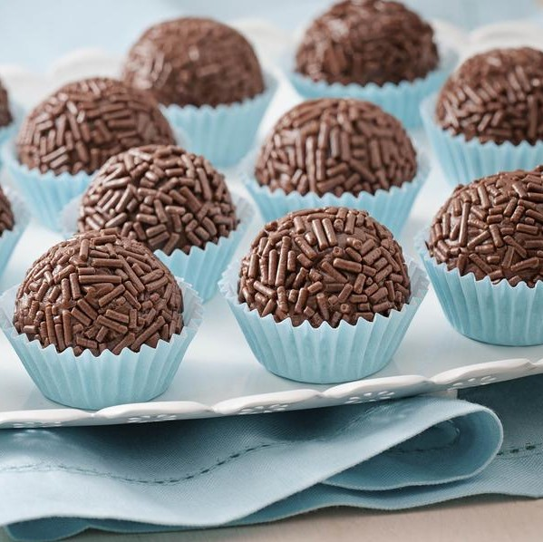
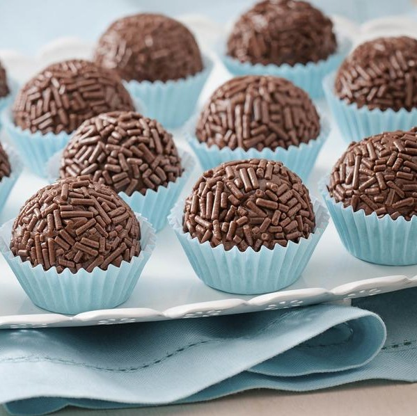
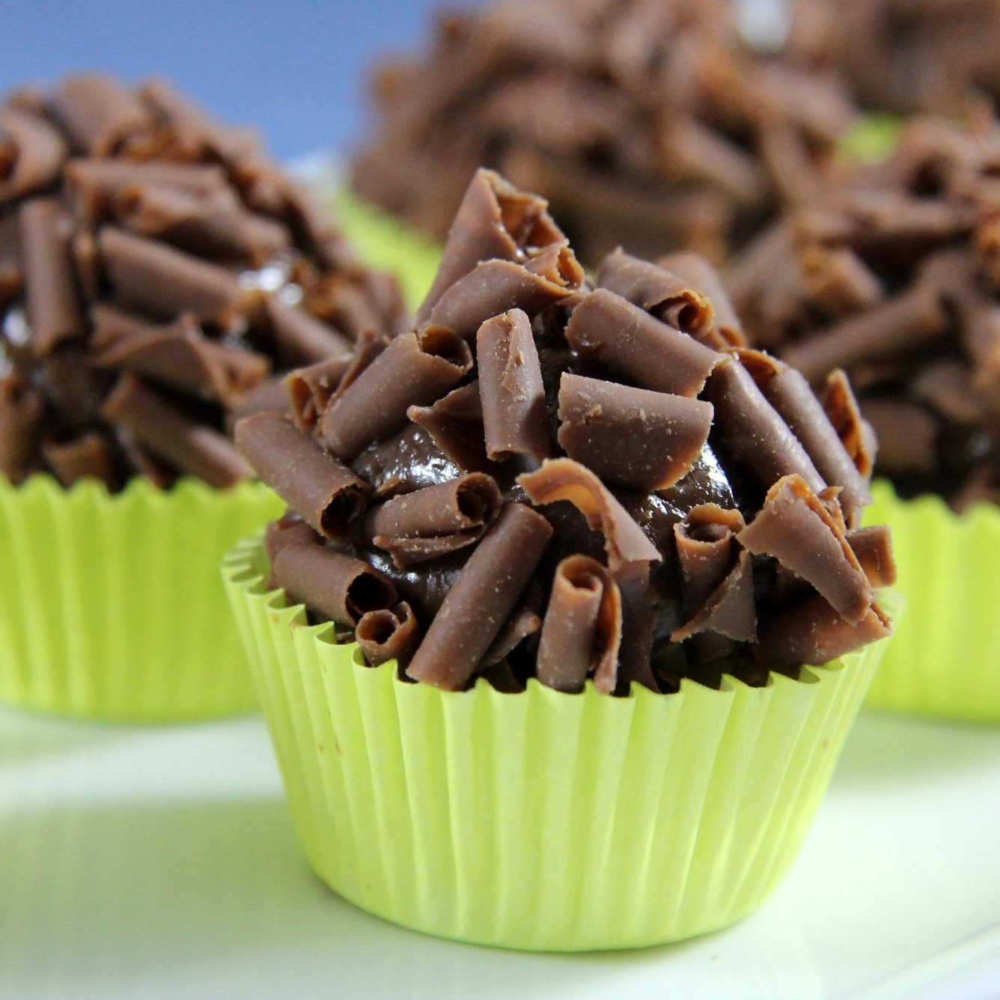
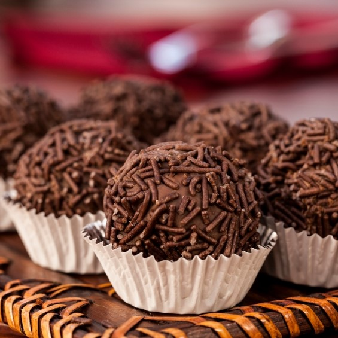

Ingredientes
- 1 caixa de leite condensado
- 1 colher (sopa) de margarina sem sal
- 4 colheres (sopa) de chocolate em pó
- Chocolate granulado - opcional
Modo de Preparo
- Em uma panela funda, acrescente o leite condensado, a margarina e o chocolate em pó;
- Cozinhe em fogo médio e mexa até que o brigadeiro comece a desgrudar da panela;
- Reserve em prato e deixe esfriar, após faça pequenas bolas e passe no chocolate granulado.
BRIGADEIRO
O brigadeiro é "coisa nossa", bem brasileira mesmo !!! O quitute de leite
condensado, chocolate em pó e manteiga nasceu nas mãos da doceira carioca Heloísa Nabuco de
Oliveira. Em 1946, ela criou o docinho para vender e arrecadar fundos para a campanha
presidencial do brigadeiro Eduardo Gomes, seu candidato favorito.
 

Brigadeiro é o doce + popular entre os brasileiros

